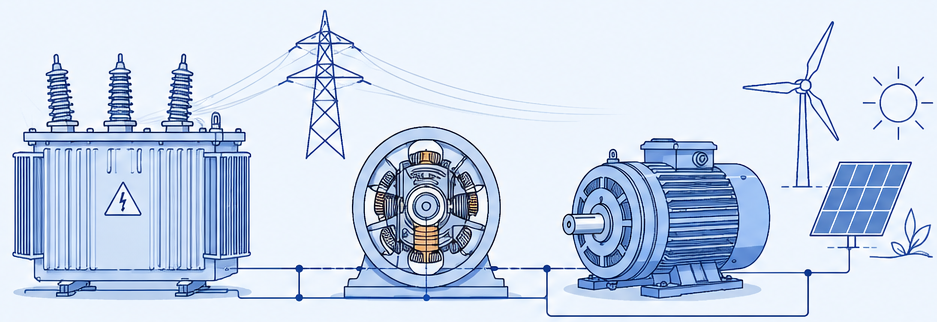

Ensaios Laboratoriais

Máquinas Elétricas
Ensaios em laboratório para consolidação dos princípios de funcionamento de máquinas elétricas.
Unidade curricular
Máquinas Elétricas
Ano
2024/25
Equipa
2 elementos
Aplicação
Iluminação automática
Área
Eletrónica Analógica
Componentes
LDR · NE555 · LED
Conceitos
Divisor de tensão · Temporização

Motor presente no laboratório.
O objetivo foi consolidar a matéria dada nas aulas teóricas através de ensaios reais em laboratório: transformadores, máquina de corrente contínua, motor síncrono trifásico e motor de indução, assim como o método de arranque estrela-triângulo.
Tambem fazemos referência às energias renováveis e cuidados a ter num laboratório.
Como introdução, usámos a bicicleta estática do laboratório — ligada a um alternador de automóvel — para perceber, na prática, a conversão de energia mecânica em elétrica: o rotor gira, cria um campo magnético variável, e esse campo induz tensão no estator, que depois é retificada para corrente contínua.
Fizemos o ensaio de indutâncias (com núcleo de ferro, núcleo parcial, núcleo de ar e associações em série), seguido dos ensaios clássicos de um transformador: em vazio, em curto-circuito e de polaridade. Cada ensaio isola um comportamento diferente — o de vazio mostra as perdas no núcleo, o de curto-circuito as perdas nos enrolamentos, e o de polaridade confirma o sentido dos enrolamentos primário e secundário.
Testámos a máquina CC a funcionar como gerador, com excitação independente: ao girar a manivela manualmente, gerámos tensão suficiente para acender um conjunto de lâmpadas, confirmando a relação entre velocidade de rotação e tensão induzida.
Máquina de corrente contínua no laboratório.
Como o motor síncrono não tem binário de arranque próprio, usámos um motor universal auxiliar para o levar até perto da velocidade síncrona antes de o ligar à rede trifásica — método clássico para sincronizar este tipo de máquina.
Motor síncrono trifásico no laboratório.
No motor de indução trifásico, comparámos o comportamento em vazio e com carga, e vimos o efeito do condensador de arranque na versão monofásica (reduz a corrente de arranque e o binário de trepidação).
Motor de indução monofásico no laboratório.
Por fim, montámos o circuito clássico de arranque estrela-triângulo com contactores e temporizador — a solução mais comum para limitar o pico de corrente no arranque de motores trifásicos de maior potência.
Placas do arranque estrela-triângulo.